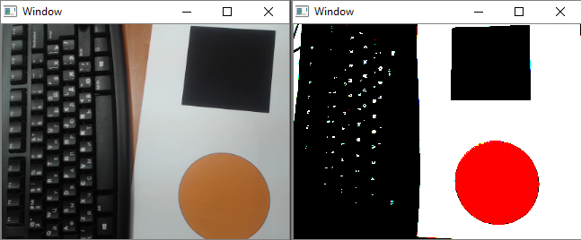

#include <murapi.h> //заголовочный файл библиотеки libmurapi
int main() {
//Инициализируем движители.
//Первый движитель будет с ID 10,
//Второй - с ID 20, третий - с ID 30, четвертый - с ID 40
setupThrusters(10, 20, 30, 40);
//Создаем два экземпляра класса Camera
Camera cameraFront;
Camera cameraBot;
//Пускай у нас камера с ID 1 будет передней,
//А с ID 2 нижней.
//ID присваиваются камерам в зависимости от их USB ID.
//Какая из них первая, а какая вторая можно будет определить
//только экспериментально
cameraFront.init(1);
cameraBot.init(2);
//Установим разрешение на камеры
cameraBot.setCameraRes(320, 240);
cameraFront.setCameraRes(320, 240);
//Создаем 2 экземпляра структуры Object
//Которые будут хранить информацию о найденных объектах
Object detectedObjectFront;
Object detectedObjectBot;
//В бесконечном цикле будем искать квадраты нижней
//И треугольники передней
while(true) {
detectedObjectBot = detectRectangle(cameraBot);
detectedObjectFront = detectTriangle(cameraFront);
//Если передняя камера нашла треугольники
if (detectedObjectFront.type == OBJECT::TRIANGLE) {
//Пусть двигатели 2 и 3 у нас горизонтальные
//Устанавливаем тягу в 40
setThrusterPower(THRUSTER::TWO, 40);
setThrusterPower(THRUSTER::THREE, 40);
//Применяем установленную тягу
applyThrusterPower();
}
else {
//Если передняя камера не видит треугольник,
//Идем с тягой 70
setThrusterPower(THRUSTER::TWO, 70);
setThrusterPower(THRUSTER::THREE, 70);
//Применяем установленную тягу
applyThrusterPower();
}
//Если нижняя камера нашла прямоугольник
if (detectedObjectBot.type == OBJECT::RECTANGLE) {
//Остановим движители
setThrusterPower(THRUSTER::TWO, 0);
setThrusterPower(THRUSTER::THREE, 0);
//Применяем установленную тягу
applyThrusterPower();
//Выходим из цикла чтобы всплыть
break;
}
}
//Пока глубина > 20см
while (getDepth() > 20) {
//Всплываем с тягой -80
setThrusterPower(THRUSTER::ONE, -80);
applyThrusterPower();
}
return 0;
}#include <murapi.h>
#include <cmath>
void keepYaw(float yaw, int power) {
//Устанавливаем коэффициенты
static const float kp = 0.1F;
static const float kd = 0.1F;
//Вычисляем PD регулятор
static float currentYaw = getYaw();
static float currentAS = getAS();
static float error = (yaw - currentYaw);
static float pd = (error * kp) - (currentAS * kd);
static int powerLeft = power + pd / 2.0F;
static int powerRight = power - pd / 2.0F;
//Проверяем тягу на граничные значения
if (powerLeft > 100) {
powerLeft = (powerLeft - (std::abs(powerLeft) - 100));
}
if (powerLeft < -100) {
powerLeft = (powerLeft + (std::abs(powerLeft) - 100));
}
if (powerRight > 100) {
powerRight = (powerRight - (std::abs(powerRight) - 100));
}
if (powerRight < -100) {
powerRight = (powerRight + (std::abs(powerRight) - 100));
}
//Устанавливаем тягу
setThrusterPower(THRUSTER::ONE, powerLeft);
setThrusterPower(THRUSTER::TWO, powerRight);
//Применяем установленную тягу
applyThrusterPower();
}
int main() {
setupThrusters(10, 20, 30, 40);
//Будем держать курс в 15 градусов
float yawSet = 15.0F;
//Идем вперед, стабилизируясь по курсу в 15 градусов
while (true) {
//Идем вперед с тягой в 40, удерживая курс 15 градусов
keepYaw(yawSet, 40);
}
return 0;
}
#include <murapi.h>
int main()
{
//Создаем объект камеры.
Camera cam;
//Инициализируем камеру.
cam.init(0);
//Создаем объект для хранения информации о найденом треугольнике.
Object tri;
//Будем искать треугольник в бесконечном цыкле.
while(true)
{
//Ищем треугольник.
tri = detectTriangle(cam);
//Если треугольник найден, то выходим из цикла.
if (tri.type == OBJECT::TRIANGLE) {
break;
}
}
return 0;
}#include <murapi.h>
int main()
{
//Создаем объект камеры.
Camera cam;
//Инициализируем камеру.
cam.init(0);
//Создаем объект для хранения информации о найденом круге.
Object circle;
//Будем искать круг в бесконечном цыкле.
while(true)
{
//Ищем круг.
circle = detectCircle(cam);
//Если треугольник найден, то выходим из цикла.
if (circle.type == OBJECT::CIRCLE) {
break;
}
}
return 0;
}#include <murapi.h>
int main()
{
//Создаем объект камеры.
Camera cam;
//Инициализируем камеру.
cam.init(0);
//Создаем объект для хранения информации о найденом круге.
Object rect;
//Будем искать круг в бесконечном цыкле.
while(true)
{
//Ищем круг.
rect = detectRectangle(cam);
//Если треугольник найден, то выходим из цикла.
if (rect.type == OBJECT::RECTANGLE) {
break;
}
}
return 0;
}#include <murapi.h> //заголовочный файл библиотеки libmurapi
int main() {
//Инициализируем движители.
//Первый движитель будет с ID 10,
//Второй - с ID 20, третий - с ID 30, четвертый - с ID 40
setupThrusters(10, 20, 30, 40);
//Создаем экземпляр класса Camera
Camera camera;
//Инициализируем камеру.
camera.init(0);
//Установим разрешение на камеру
camera.setCameraRes(320, 240);
//Создаем 2 экземпляра структуры Object
//Которые будут хранить информацию о найденных объектах
Object detectedRect;
Object detectedTri;
//В бесконечном цикле будем искать квадраты и треугольники
while(true) {
detectedRect = detectRectangle(camera);
detectedTri = detectTriangle(camera);
//Если камера нашли треугольники
if (detectedTri.type == OBJECT::TRIANGLE) {
//Вращаем вторым мотором с тягой -40
setThrusterPower(THRUSTER::TWO, -40);
applyThrusterPower();
}
else {
setThrusterPower(THRUSTER::TWO, 0);
applyThrusterPower();
}
//Если камера нашли квадраты
if (detectedRect.type == OBJECT::RECTANGLE) {
//Вращаем вторым мотором с тягой +40
setThrusterPower(THRUSTER::TWO, 40);
applyThrusterPower();
}
else {
setThrusterPower(THRUSTER::TWO, 0);
applyThrusterPower();
}
}
return 0;
}В данном примере мы уменьшили количество цветов, используемых для отрисовки изображения, до трех.

#include <murapi.h>
uint8_t reduceVal(const uint8_t val)
{
if (val < 128) {
return 0;
}
else {
return 255;
}
}
void reduceColors(cv::Mat &img)
{
// Изображение представленно в виде матрицы row x cols
//Обойдем кждый элемент данной матрицы.
for (int i = 0; i < img.rows; i++) {
for (int j = 0; j < img.cols; j++) {
//Поскольку изображение цветное (3 канала по 8 бит на канал),
//Каждый элемент матрицы представлен в виде массива из 3 элементов
// Каждый элемент массива хранит информацию о значении составляющей цвета.
cv::Vec3b pixels = img.at<cv::Vec3b>(i,j);
//Изменяем значение каждой состовляющей цвета.
pixels.val[0] = reduceVal(pixels.val[0]); //Blue
pixels.val[1] = reduceVal(pixels.val[1]); //Green
pixels.val[2] = reduceVal(pixels.val[2]); //Red
img.at<cv::Vec3b>(i,j) = pixels;
}
}
}
int main()
{
Camera cam;
cam.init(0);
//В данной картинке мы будем хранить измененное изображение
cv::Mat imageToShow;
while(true) {
imageToShow = cam.getFrame().clone();
reduceColors(imageToShow);
showImageOne(imageToShow);
}
return 0;
}#include <murapi.h>
int main () {
setupThrusters(10, 20, 30, 40);
while(true) {
setThrusterPower(THRUSTER::ONE, 30);
setThrusterPower(THRUSTER::TWO, 30);
setThrusterPower(THRUSTER::THREE, 30);
setThrusterPower(THRUSTER::FOUR, 30);
applyThrusterPower();
}
}